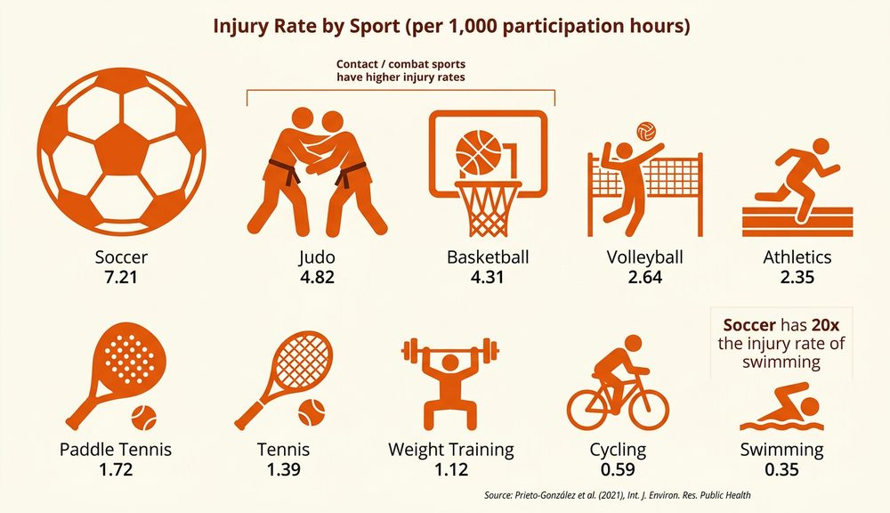

What Are Extrinsic Factors?
An extrinsic factor is a factor where the risk of injury comes from outside of the body. These are external influences that a performer may or may not be able to control. Understanding extrinsic factors is essential because many sports injuries can be prevented by identifying and managing these risks before activity begins.
There are four main categories of extrinsic factors, remembered using the acronym TEEC: Type of activity, Environment, Equipment, and Coaching/supervision.
The four extrinsic factors that influence injury risk are remembered using the acronym TEEC — Type of activity, Environment, Equipment, and Coaching/supervision. Each of these comes from outside the performer’s body.
Type of Activity
The type of sport or activity a person takes part in directly affects the risk and type of injury they might experience. Different sports carry different levels of risk depending on how much physical contact is involved and how movements are performed.
Contact Sports
Contact sports such as rugby, boxing and martial arts involve direct physical contact between performers. This means there is a high risk of impact injuries — concussions, fractures, dislocations and bruising are all common. The force of tackles, punches or throws can cause serious harm, especially when technique is poor or protective equipment is not worn.
Non-Contact Sports
Non-contact sports such as swimming, gymnastics and athletics do not involve direct physical contact between performers. However, they still carry injury risks. Gymnasts may be injured from falls or poor landings, swimmers can develop shoulder problems from repetitive strokes, and athletes may suffer muscle strains from sprinting or jumping.
Grey Area Sports
Some sports sit in a grey area between contact and non-contact. Football, hockey and netball all have rules designed to reduce physical contact, but collisions and tackles still happen regularly. In football, a mistimed tackle can cause ankle or knee ligament injuries. In netball, landing awkwardly after contesting a pass can cause sprains.
Repetitive Movement Sports
Sports involving repetitive movements — such as tennis, golf and discus — carry a specific risk of overuse injuries. When the same body part is used in the same way again and again, it places repeated stress on muscles, tendons and joints. This can lead to conditions like tennis elbow, golfer’s elbow or stress fractures. These injuries develop gradually over time rather than from a single incident.
Contact sports (rugby, boxing, martial arts, wrestling) involve deliberate physical contact as part of the game. Injuries tend to be acute — sudden impacts causing fractures, concussions, dislocations and bruising. The severity depends on the force of contact and whether protective equipment is worn.
Non-contact sports (swimming, athletics, gymnastics, badminton) do not involve physical contact between performers. Injuries are more likely to come from overuse, poor technique, falls or equipment failure. For example, a gymnast may fracture a wrist from a poor landing, or a swimmer may develop rotator cuff problems from thousands of repetitive arm strokes.
Grey area sports (football, hockey, netball, basketball) have rules to limit contact, but collisions still occur. These sports often produce a mix of both impact injuries and overuse injuries. A footballer might suffer a broken leg from a tackle (impact) or develop knee problems from years of training on hard surfaces (overuse).

Environment
The environment in which sport takes place can significantly increase the risk of injury. There are three main environmental factors to consider: weather conditions, playing surfaces and human interaction.
Weather Conditions
Weather has a major impact on safety during outdoor sport. Rain makes playing surfaces slippery, increasing the risk of falls and twisted ankles. Cold temperatures cause muscles to stiffen, making strains and tears more likely if performers do not warm up properly. Strong wind can affect balance and the flight of balls or equipment. Fog and poor visibility increase the risk of collisions because performers cannot see each other clearly. Extreme heat can lead to dehydration and heat exhaustion.
Playing Surfaces
The surface on which sport takes place matters. Natural grass can become muddy and slippery in wet weather, while artificial turf stays firmer but can cause friction burns. Indoor surfaces such as wooden courts provide good grip but can cause joint stress from hard impacts. Uneven ground — holes, ruts or loose stones — creates trip hazards. Debris, litter or broken glass on a playing area is a serious safety concern that should be checked before any activity begins.
Human Interaction
Other people present during sport can also be an environmental risk factor. Other performers may cause accidental collisions or dangerous play. Spectators who encroach onto the playing area or behave aggressively can distract performers or cause injuries. Officials play a key role in controlling the game, enforcing rules and checking the playing area — poor officiating can allow dangerous play to continue unchecked.
Before any sporting activity, the environment should be checked for hazards. This includes inspecting the playing surface for holes, debris or wet patches, checking weather conditions, and ensuring spectators are a safe distance from the playing area.
Equipment
The equipment used in sport can either protect performers from injury or cause injury if it is faulty, damaged or inappropriate. Equipment falls into three main categories.
Protective Equipment
Protective equipment is specifically designed to prevent injuries or reduce their severity. Shin pads in football absorb impact from tackles. Helmets in cricket and cycling protect the head from serious injury. Gumshields in rugby prevent dental injuries. Gloves in boxing cushion the force of punches. When protective equipment is not worn, or is worn incorrectly, the risk of injury increases significantly.
Performance Equipment
Performance equipment includes the items used to play the sport — bats, balls, rackets, goals, javelins and so on. If performance equipment is damaged, worn out or faulty, it can break during use and cause injury. A cracked cricket bat could splinter on impact. A loose goal post could collapse. Equipment should be regularly inspected and maintained.
Clothing and Footwear
Wearing the correct clothing and footwear for the activity and conditions is essential. Football studs provide grip on grass but are dangerous on indoor courts. Running shoes designed for roads offer little ankle support on uneven trail surfaces. Wearing jewellery during sport can cause cuts and scratches. Loose clothing can get caught in equipment. In cold weather, inadequate clothing increases the risk of hypothermia.
Protective equipment prevents or reduces injury. Examples include helmets (cricket, cycling, American football), shin pads (football, hockey), gumshields (rugby, boxing), body armour (cricket), gloves (boxing, wicketkeeping) and goggles (swimming, skiing). Rules in many sports make certain protective equipment compulsory.
Performance equipment is used to play the sport. Examples include bats (cricket, baseball), rackets (tennis, badminton), balls, goals, nets, javelins, discus and hurdles. This equipment must be in good condition — damaged items should be replaced immediately.
Clothing and footwear must be appropriate for the activity, surface and weather. Studded boots for grass, trainers for indoor courts, layered clothing for cold conditions. Incorrect footwear is one of the most common causes of preventable sports injuries, particularly sprains and blisters.
Coaching, Supervision and Leading
The quality of coaching and supervision during sport has a direct impact on injury risk. A good coach reduces the chance of injury; a poor coach can increase it.
Knowledge of Correct Techniques
A coach must teach the correct technique for skills and movements. If a rugby player is taught an incorrect tackling technique, they risk serious neck or spinal injuries. If a weightlifter uses poor form, they risk back injuries. Coaches need thorough knowledge of the rules and regulations of their sport to ensure performers play safely and legally.
Experience and Communication
An experienced coach is better equipped to spot dangerous situations and intervene before injuries occur. They also need strong communication skills to explain techniques clearly. If a coach cannot demonstrate or explain a skill properly, performers may attempt it incorrectly and injure themselves.
Supervision
Adequate supervision is essential, particularly with younger or less experienced performers. The level of supervision should match the activity — high-risk activities like trampolining or rock climbing require closer supervision than a gentle warm-up jog. Activities must be age-appropriate and ability-appropriate. Asking a beginner to attempt an advanced skill they are not ready for significantly increases injury risk.
Ethical Standards
Coaches have a duty of care to their performers. This means they should never encourage aggression or dangerous play, even if it might win the game. A coach who pushes performers to “play through” an injury, or who encourages illegal tackles, is putting their athletes at risk. Ethical coaching prioritises the safety and long-term wellbeing of performers above results.